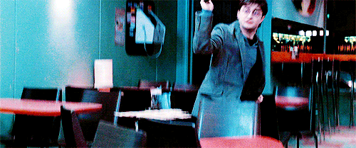

<!DOCTYPE html>
<html>
    <head>
        <meta charset="utf-8">
        <title>PotterScience</title>
        <meta name="description" content="PotterScience">
        <link rel="stylesheet" href="styles.css">
        <link rel="icon" href="star-white.jpg">
    </head>
</html>

<body>
    <div class="topnav">
        <a href="index.html"><br>Home</a>
        <a class="active" href="facts.html"></a>
        <a href="RantRoom.html"><br>RantRoom</a>
        <a href="Hogsmeade.html"><br>Hogsmeade</a>
      </div>

      <h1 class="Heading1">The Stupefying Charm</h1>
      <br> 
      <p class="pb">The Stunning Spell or Stupefy is a charm that has the purpose in stunning your targets.
    The spell also had the ability to halt moving objects. This spell is pointed to make people fall out of their conscious without any lasting damage.
    But you shall be cautious in using this spell, because it works too well. Rather than hitting your opponent, it would also hit you instead if you fail!
    You might be wondering, why such spell like a stupefy has anything to do with science? Well, here's the fun, mate.
    Stupefy deliberates mind to fall unconscious, now- have you ever wonder how does it feels like to feel stupefyed?
    Before that, did you know there is a magic object that can stupefy you? (No, tis not a wand, mate.)
    It is a machine called the Stun Gun! Well, it stuns you with electricity rather than magic, but it works similar with the Stunning Charm.
    When people get stunned (not with a wand), they're brain got shocked by too much electricity their body cannot hold.
    It was a massive shock for the brain that causes their own body confused and unbalanced, because they cannot even tell whether they can move their musclesor not.
    They are partially paralyzed, temporarily.
    The current from the stun gun may be generated with a pulse frequency that mimics the body's own electrical signals. 
    In this case, the current will tell the person's muscles to do a great deal of work in a short amount of time.
    The action in the muscles is actually happening at a cellular level, so you couldn't really see the person twitching or shaking because they've become too weak to move!
    Well, now you know even muggles can Stupefy people when they want to (although I'll have to say, it'll be cooler when you use a wand).
</p>
<br>



<br>
<br><br><BR><BR><BR><BR><BR><BR><BR><BR><BR>
<footer class="footer">
    <p>Contact us; 
    <a href="mailto:jahypotenuse@gmail.com">jahypotenuse@gmail.com</a>&
    <a href="mailto:gillparker321@gmail.com">gillparker321@gmail.com</a></p>
  </footer> 
</body>